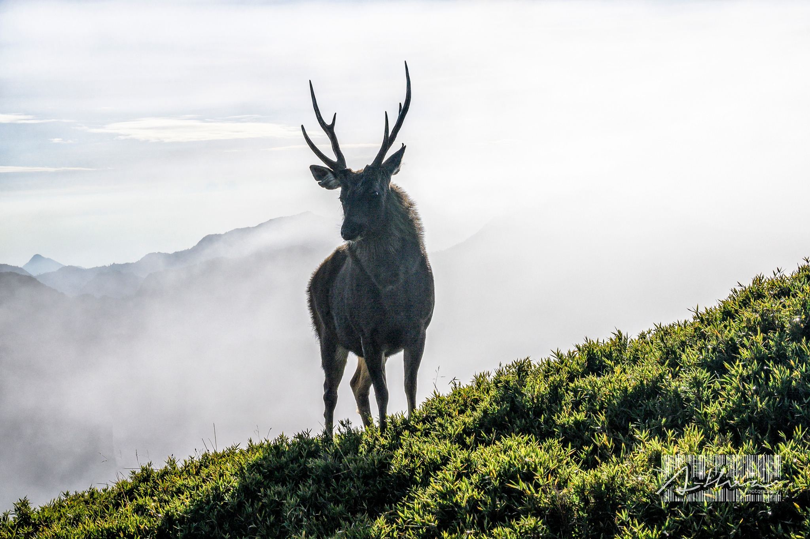
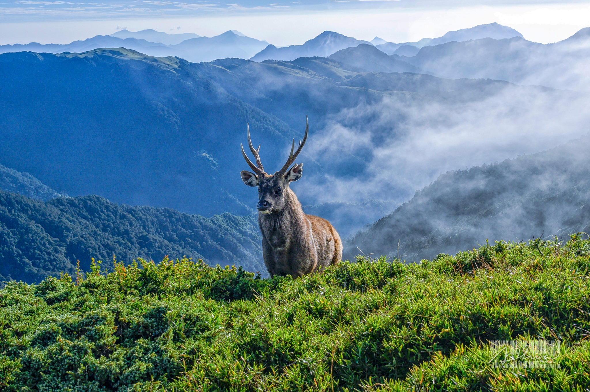
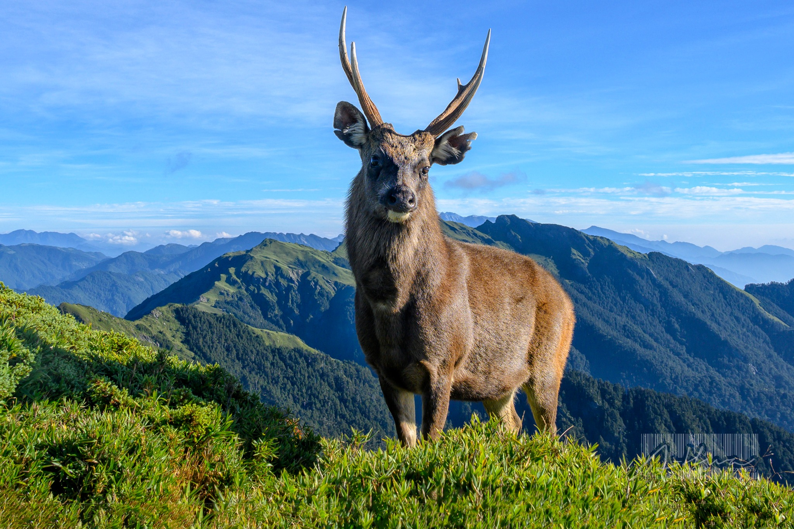
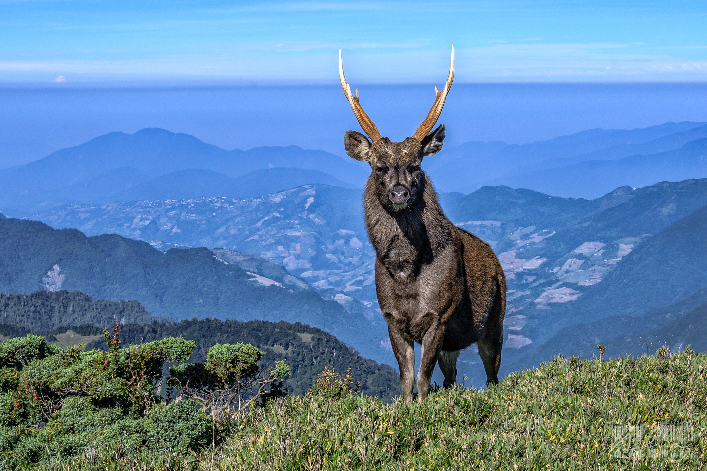
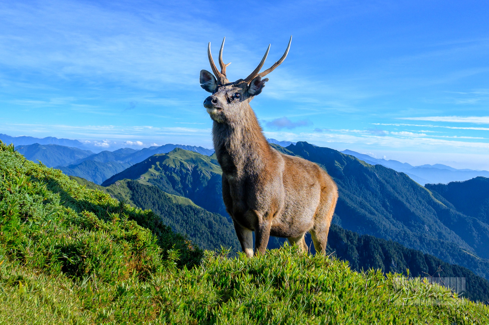

陳杰龍的筆記網站
陳杰龍的筆記網站 主頁
主頁 歸檔
歸檔 分類
分類 其他
其他 關於我
關於我 奇萊山神獸
奇萊山神獸
奇萊山在哪?
奇萊山，其主山稱為奇萊主山，又稱奇萊山主峰，或簡稱奇萊主峰，位於臺灣花蓮縣秀林鄉富世村、銅門村與南投縣仁愛鄉合作村之間，標高3,560公尺，台灣百岳排名第20，地處中央山脈主稜北段，山頂有編號5984的三等三角點。
神獸是甚麼?
臺灣水鹿（學名：Rusa unicolor swinhoii，英語：Formosan Sambar Deer），又稱四目鹿、史氏水鹿，是一種在臺灣特有的水鹿亞種，是台灣最大型的草食動物，會進行季節性的換毛以偽裝，夏季體色較淡，為黃褐色，冬季則為暗褐色。
水鹿的習性
臺灣水鹿為臺灣特有的亞種，多於清晨與黃昏活動，棲息於海拔1000公尺以上中高海拔的原始森林，多活動於近水源的草地，以樹葉與嫩草為主食。目前主要分布於中央山脈與花東山區，民間養殖族群不少，但野外族群並不常見。為第三級其他應予保育之野生動物，因主要天敵台灣雲豹可能已滅絕，野外族群無捕食者控制而膨脹4-5倍，對台灣高海拔的台灣二葉松、台灣鐵杉以及台灣冷杉等樹種，造成一定的影響，破壞高海拔的生態平衡。另一方面，水鹿的生存威脅並未減少。根據台灣的國家公園網頁則說「水鹿受到狩獵壓力和棲息地的破壞，使得中大型哺乳動物的分布越來越侷限在高山地區，目前水鹿基礎生態的研究仍嫌不足。」幾位學者也認為族群大繁殖的現象是區域性的，不該一概而論。
圖片
 ▲ 圖片出處及作者：LongHwa Liu  ▲ 圖片出處及作者：LongHwa Liu  ▲ 圖片出處及作者：LongHwa Liu  ▲ 圖片出處及作者：LongHwa Liu  ▲ 圖片出處及作者：LongHwa Liu
心得
有時候在喧鬧的城市久了，突然偶爾會想去爬爬山、聽聽看看大自然的作品，最近在Facebook的社團看到這位網友分享了奇萊山山上的水鹿，看到的一瞬間極為震撼，自帶山嵐的仙氣以及霸氣的鹿角，襯托群山連綿，宛如仙境，水鹿賦予生命神奇獨特之美，我還有一刻以為是P圖的或許可以自己想想，大自然給的免費美景，還有多少時間能讓我們去欣賞。